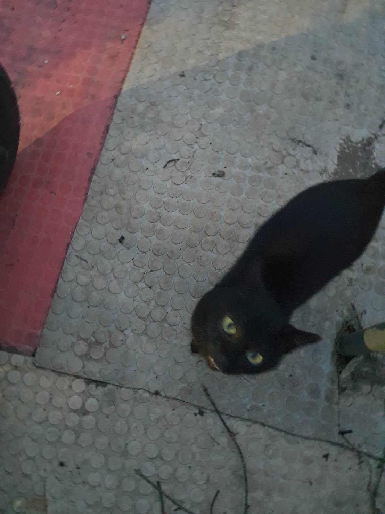

從小我就喜歡一些小動物，也陸續養過一些寵物，如:「三線鼠、蜜袋鼯、觀賞蝦、烏龜、兔子......等」，而大概小學三年級搬到山區去住能夠養東西的室外空間就變大了家人養了鯉魚、鸚鵡、蜜蜂、雞......等，鸚鵡是我媽的愛寶 名為妞妞，品種是灰鸚鵡，是一種會說話的鸚鵡類型，她很會學各種聲音，常常在叫「珊珊啊!」、「黃珊珊吃飯了!」、模仿講電話「喂 你好、好好好、謝謝、好得好的、掰掰」或是模仿貓叫聲，當然這都不是最吵的，最吵的部分是她會一直發出彈舌或是超大且尖銳的聲音。
另外附上在山上看到的台灣藍鵲照片
蜜蜂、雞是我們家主要生產來源，平日爸媽會在市場賣雞肉，早上賣完回來，爸爸就要去照顧他的百萬小員工-蜜蜂們，小土蜂很容易被虎頭蜂攻擊，如果沒有去解救他們很有可能會導致整箱蜜蜂飛走，還有蜜蜂也不是單純去採花蜜就能夠活，有時候還是要做峰糧給他們吃，可能有的人會有誤解，覺得蜜蜂不是應該只採花蜜吃嗎?是不是有什麼作假或是會導致蜂蜜不純之類的問題，有時候確實是要餵食，其用法上還可以分為兩類；一類叫做“獎勵性的飼餵”，另一種叫“救助性飼餵”什麼叫作獎勵性飼餵呢，所謂的獎勵性飼餵是指當外界比較少開花的時候，蜂群外出採集活動比較少時，定時定量的給予引誘性的飼餵，使其誤以為外界有花開了，引蜂出洞的最好辦法。還有一種情況是必須餵食的，就是當蜂群裡一點蜜都沒有了，到了不餵則死的地步。
在這個幾乎人人愛貓的時代，很多人養了卻又因種種原因棄養，而棄養的貓又沒有結紮，導致路上的貓與貓又在繁殖，現在其實到處都有流浪貓的情形，我們家山上那有好多貓現在至少10多隻吧，當初好像是有人棄養了，但是在山上所以他們又一直生一代代的下來，所以現在有好多貓，但其實那些貓都算是比較有野性的，不太會親近人到現在以來只有一隻黑貓肯給人摸、愛蹭蹭是我最喜歡的一隻因為整深黑的，我們都叫他黑貓，不要覺得這樣好像很敷衍，在我家那一代的貓幾乎都是虎斑的花紋只有他是黑的可以說是專屬獨一無二的名字了。但令人難過的是他在幾個月前死了，這令我至今無法釋懷，我們與他的感情其實已經很久了，他可以說是我高中時期的慰藉，當時天天讀書到2140才從補習班回來到家都晚上10點多快到11點，但每次快到家錢都會喊黑貓，看他今天是不是有來給摸摸、有時候他會出去旅行不在。但總有生離死別的一天，從小他就被同一批的貓咪欺負，總是我們在保護他，那時爸爸還特地把另外那兩隻送走，可後來又出現一隻又大又肥的「醜貓」總是會欺負黑貓和其他貓咪，常常在半夜打架，有時候都會看到黑貓身上有受傷好心疼。現在黑貓不在了，新的小貓也都不近人，好像似乎我們也不算有養貓了。
PS:第1和5張圖是工作地附近的浪浪
